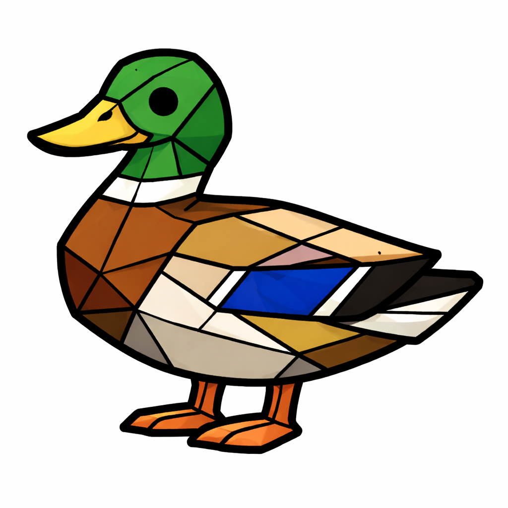

Prompt 1
Prompt
Generate a low poly stained glass mallard duck illustration.
Use exactly 8 flat solid colors plus pure black.
No gradients, no shading, no lighting effects, no texture.
Each polygon must be a single flat color fill.
Use uniform thickness black outline lines between all shapes.
Vector style, clean SVG look, posterized, high contrast, simple geometric shapes.
White background.
Result

Clean polygon facets with uniform black outlines. Good contrast and flat fills — suitable for vectorizing. Feet and bill have slight gradient artifacts.